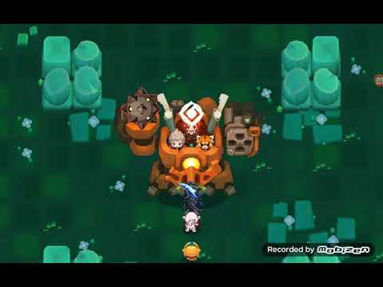
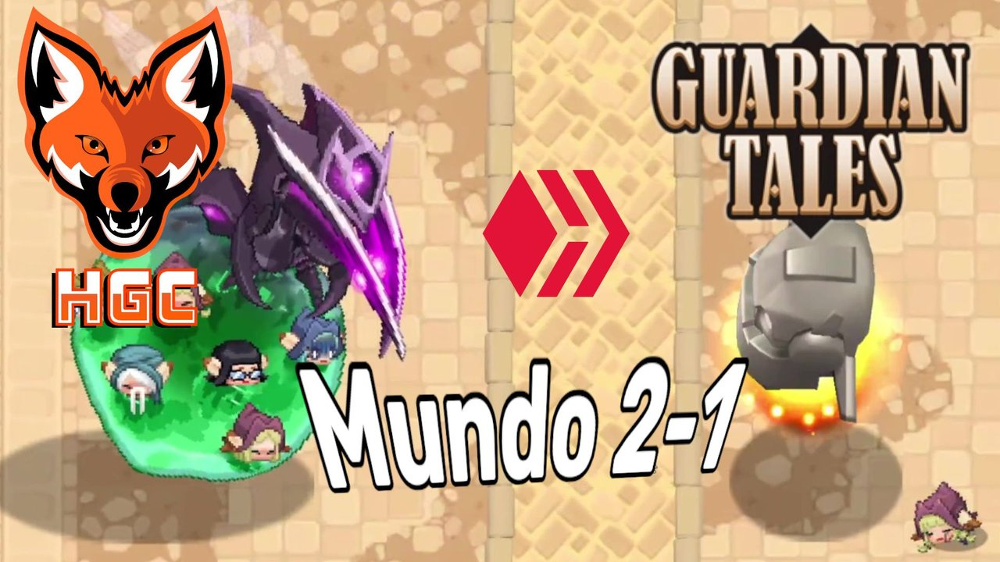
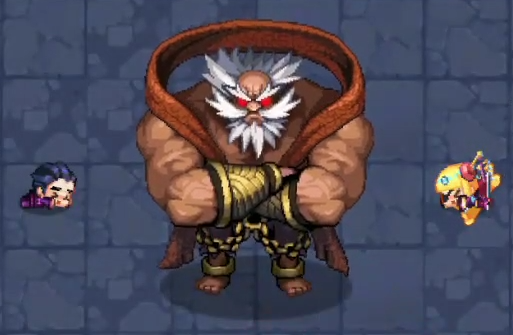

Introduccion
Los enemigos importantes una pequeña descripcion de ellos.
Los enemigos importantes una pequeña descripcion de ellos.
| Beth, la maga oscura | |
|---|---|
| Beth la maga oscura la jefa de la division 13 del ejercito de los invasores, peleas contra ella en el mundo 11 parte 11-5. Donde te enfrentas a ella y 3 fases distitas. | |
| Caballero falso | |
|---|---|
| El principal encargado de los problemas que suceden en el mundo 12 y el mundo 13, el cual proviene del otro mundo en el que no pudo salvar a sus amigos y vuelve aqui para intetarlo de nuevo. | |
| Mk.2 | |
|---|---|
| Mk.2 sale en el mundo 12 cuando intentas impedir los planes del Caballero falso y ella se interpone intentandote asesinar. | |
| Trío del Panda loco | |
|---|---|
| El Mad Panda Trio son cazarrecompensas que constan de dos humanos y un panda rojo. Secuestran a la princesa la primera vez que los conoces. En el mundo 1 usan un traje de robot para intentar derrotarte. El loco Panda Trio podría ser una referencia al Team Rocket de Pokémon. |
 |
| Segador | |
|---|---|
| El enemigo el cual te sale por primera vez cuando una chica empieza a gritar llamando su antencion. Harvester es un insecto gigante como una criatura criada por los invasores. Está causando disturbios en el Reino Teatan. |  |
| Comandante Invasor | |
|---|---|
| El cual por primera vez lo ves en el mundo 2 y quiere enfretarte a una pelea para impresionarlos a todos. | |
| Líder del Clan Viper | |
|---|---|
| El jefe del Clan Viper el cual permanece en el mundo 5 Ciudad Shen y hermano del maestro de Fei y Mei. |  |
| Hada | |
|---|---|
| Principal culpable de ser encogido en la posada y irte de aventuras | |